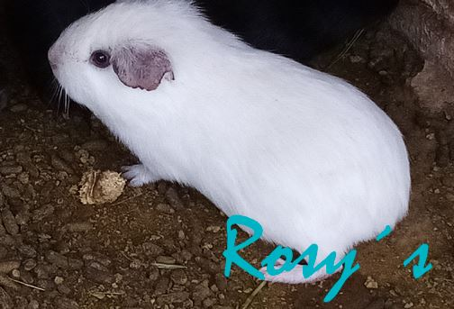

Apoyenos a lograr nuestras metas comprando productos de calidad
Los cuyes blancos y colorados se encuentran en el puebliello; donde también se encuentran ordenados; por géneros, tamaños. Tenemos posas exclusivas de madres con sus crias, por 15 días para luego ser separados de ellas. En el otro punto donde también residen, se les dan las mismas prioridades; de alimentación y cuidado. Estos se encuentran en jaulas de madera a diferencia de los otros cuyes pues estos residen en posas. En las jaulas tenemos a los cuyes negros y también se les clasifica por el tamaño género, etc. Son clasificados para que la raza no se degenere. Por ello "El campeón de los andes" es su mejor opción

La principal razón es que para quecada uno de los cuyes se desarrollen de igual manera, por ejemplo si juntamos a los machos adultos, con los recién nacidos, lo más probable es que los recién nacidos mueran o no crezcán adecuadamente por el tema de la comida, y por el tema de la reproducción, por ello para que no se dedegenere la raza se separa a cada uno, de ellos, para que así todos se desarrollen adecuadamente.
(c) Todos los derechos reservados - Rosalynn Aylas Espejo 2020
Diseñado por Jhojan Yauri